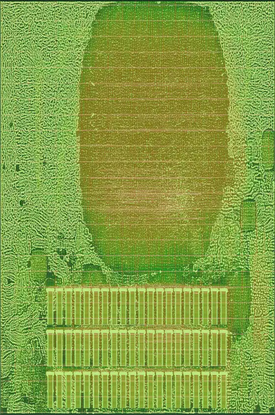

我们把一个开源 AI 模型完全换成了门电路，也就是最基础的开和关。打开网页，它就在你自己的显卡上一位一位算出答案，每一步都能核对。
免费 · 不用钱包 · 不上链 · 要用电脑上的 Chrome 或 Edge
手机跑不动这个模型。想亲自试，请在电脑的 Chrome 或 Edge 里打开 21nand.bem.city。

一个会讲英文小故事的 AI，直接做成了一颗芯片。芯片里没有处理器，也没有程序，它学到的东西刻在芯片上，通电就能开口。完整的设计图已经存上了链，谁都能取回来核对，谁也改不了。
2026-10-12 设计通过工厂的全部制造规则检查，设计图存上 X Layer。还没送厂生产。
打开网页，等它在你电脑上搭好电路，然后随便问。跑完可以一键提交你电脑的速度，帮我们补全设备数据。
在 TapeOut 上把一个几十到几千个门的小电路放上链。我们一次 3,800 个门的流片，净花费约 0.0023 OKB。
所有页面、链上站点、合约地址和每个文件的指纹，以及「21 个门开车」竞技场，都在这里。
模型 BitCPM4-1B · 每 token 261,022,627,596 NAND + 109,052,458 LATCH · WebGPU 逐门执行 · 与 RefB 金标逐 token 一致 · BSC 区块约 7,000 万 gas